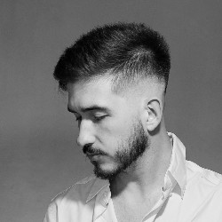

od 09/2025Aktuálně
TOPADROIT a. s.
Grafický designér, fotograf, videomaker
- Produktová fotografie, lifestyle i studiová
- Koncept, natáčení a střih produktových videí
- Reklamní kreativy pro Meta a YouTube
- Edukativní videoobsah a postprodukce
Jmenuji se Jakub Zajíček a jsem fotograf, videomaker a grafický designér z Ostravy. Fotografii se věnuji 9 let, k ní jsem postupně přidal grafický design a video. Má práce se zaměřuje na hledání krásy v detailech a zachycení podstaty každého subjektu.
Můj fotografický styl se vyznačuje emocemi, promyšlenou kompozicí a citlivým okem pro hru světla a stínu. Jako grafický designér přináším stejnou pozornost detailům a tvořím vizuální řešení, která komunikují efektivně a krásně.

Reportáže ze společenských a slavnostních událostí pro sociální sítě kraje, například předávání ocenění Vesnice roku nebo otevření točny v Chuchelné.
Animace a motion design, ilustrace a práce s fotografiemi.
Fotografie architektury, portrétů a produktů, postprodukce.
Ilustrace a koncept vizuálního stylu.
Jsem vždy otevřen diskusi o nových projektech, kreativních nápadech nebo příležitostech být součástí vaší vize.
Telefon+420 605 105 622 E-mailzajicekkuba@seznam.czOtevře se vaše e-mailová aplikace s předvyplněnou zprávou.